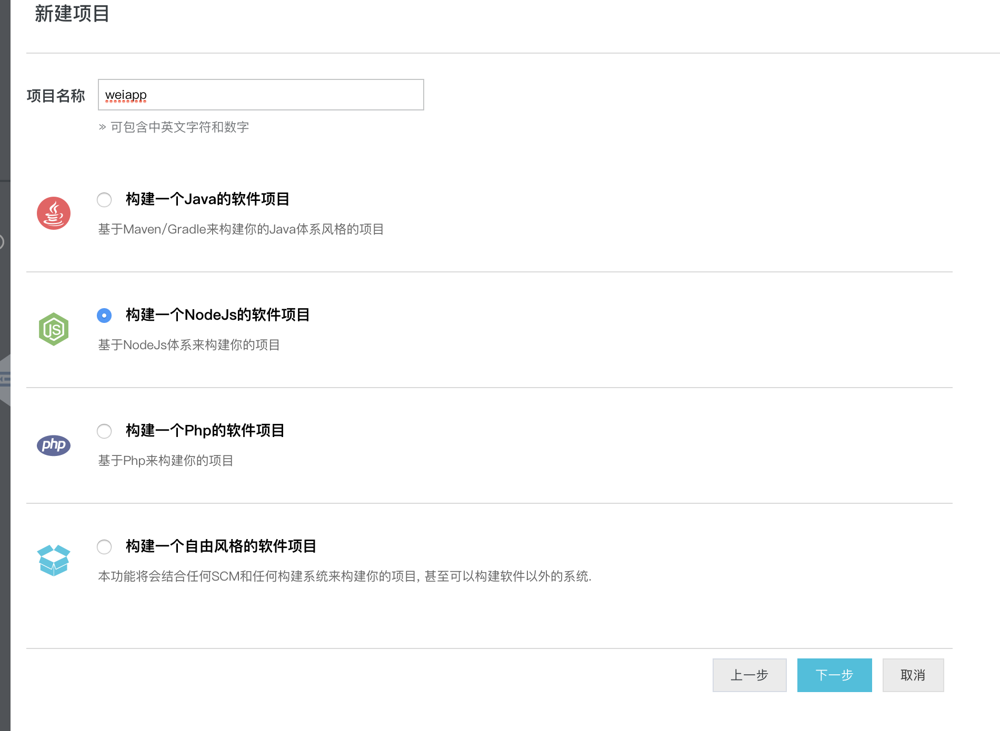
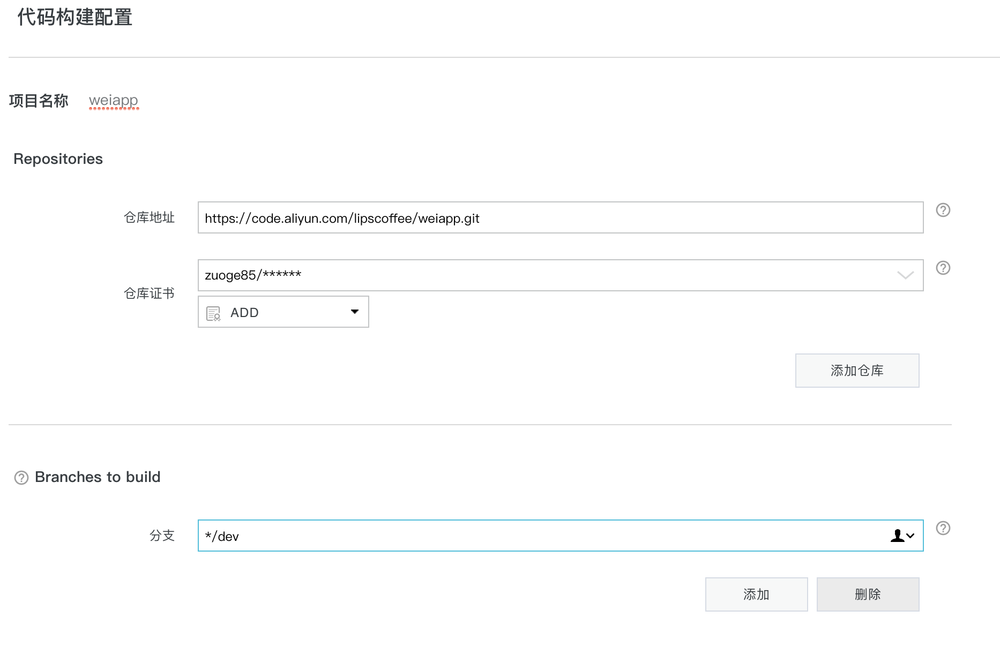
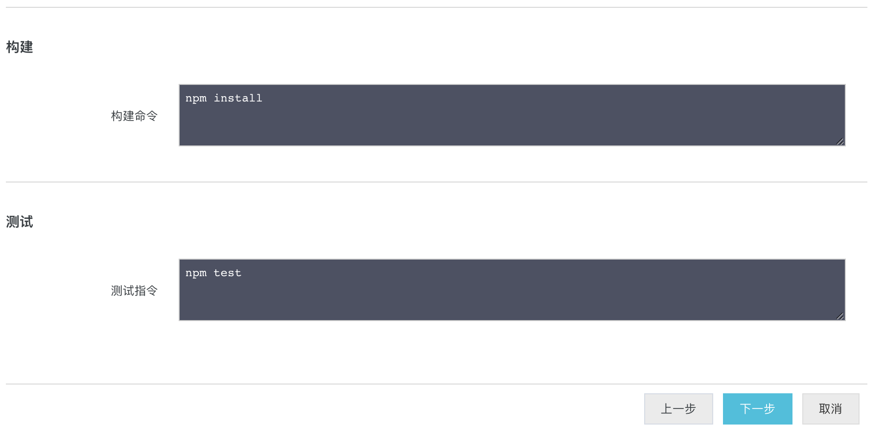
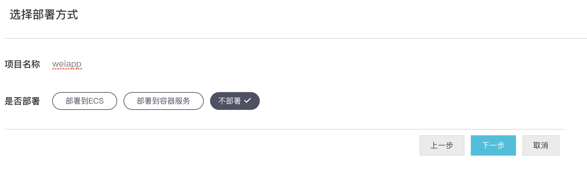
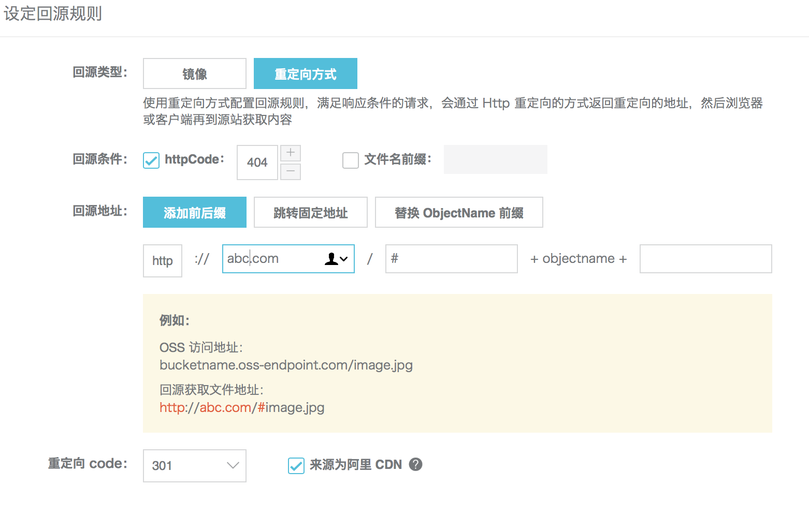

现在流行前后端彻底分离，前端生成webpack 打包的静态文件。可以通过 CodePipeline构建后发布到oss 进行发布前端。下面进行详细讲解
第一步 申请开通 CodePipeline
第二步 创建CodePipeline任务
1. 创建一个nodejs任务

2. 详细设置
如下图，配置好git仓库和账号，以及分支

配置项目构建命令，比如我的项目修改成
1 | npm i |

3. 部署方式 选择不需要部署

第三步 准备oss
1. 新建 Bucket 选择标准存储，权限配置成公共读
下面测试都默认 bucket 名字为 test-weiapp-web
2. 配置访问控制 RAM
配置ram账号权限给构建使用，一定要配置好ram 权限。理由如下
- 防止误删除了其他 bucket 的文件等
- ossutil 工具太危险！！！
- 安全
3. 创建策略
在访问控制界面选择 > 策略管理 > 新建授权策略 > 选择空白模板 > 输入策略 > 创建成果
策略配置参考如下：
1 | { |
Resource的详细格式是
acs:oss:{region}:{bucket_owner}:{bucket_name}/{object_name}注意: bucket_name 是oss-cn-beijing,而且不是cn-beijing
4. 创建子账号并授权
在访问控制界面选择 > 用户管理 > 新建用户 > 输入用户名 > 勾选生成AccessKey > 确定 > 下载Ak 配置文件
在访问控制界面选择 > 用户管理 > 找到刚刚创建的用户 > 点击授权 > 找到上面创建的授权策略 > 添加 > 确定
第四步 修改项目
修改下面shell 内的 OSS_KEY_ID、OSS_KEY_SECRET、OSS_END_POINT和OSS_DISTPATH
并加入到自己项目的合适位置
1 |
|
删除文件部分的shell 可以不要，具体请参考自己项目的结构。
因为我的项目生成大量hash文件名的文件，如果不删除，oss 内无用文件将会越来越多。
但是这样的删除过程会增加部署时间，且在一定时间内网站不可以访问;
所以我建议修改项目结构，加入版本，把这些变化文件加入到一个带版本号的子文件夹，这样每次只删除第n个版本前的文件。
第五步修改 CodePipeline配置
- 如果不需要测试可以删除测试部分
- 添加构建步骤”执行shell”
- 点击立即执行开始一次构建
添加执行第四部的sh，注意相对路径是项目根路径，在我的项目内是 publish/upload.sh
第六步 修改oss 配置
对象存储 > 域名管理 > 绑定用于域名 > 输入域名 > 开启cdn ->自动添加cname
如果域名不在当前阿里云账号下或者不在阿里云，那么亲手动添加 cname。
点击确定后多等几分钟。开启cdn 扥过程比较慢。
需要提前打开cdn功能
当域名添加完毕后
对象存储 > 域名管理 > 找到刚刚添加的域名 > 开启CDN 缓存自动刷新
第七步 router 导航的问题
如果项目使用react-router 利用history api 进行导航，那么怎么解决导航的问题？
1. 修改oss 利用404页面
对象存储 > 基础设置 > 静态页面 > 默认首页和默认 404 页都修改成 index.html
但是这种办法有一个问题，除了首页外的其他页面请求的状态码都是 404。
在某些网络情况下404 会被劫持！所以这个办法实际上不完美！
2. 利用 镜像回源
利用”镜像回源”把请求重新定向回首页
对象存储 > 基础设置 > 镜像回源 > 创建规则 > 重定向

第八部 cdn 配置
CDN > 域名管理 > 找到刚刚添加的域名 > 性能优化 > 开启智能压缩